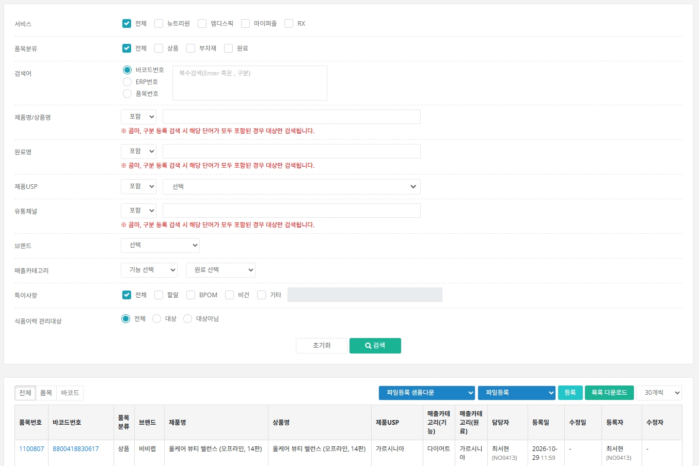
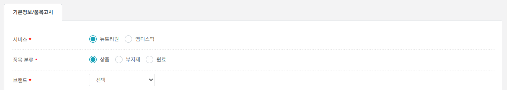
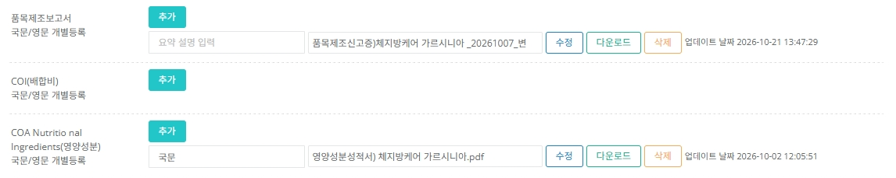
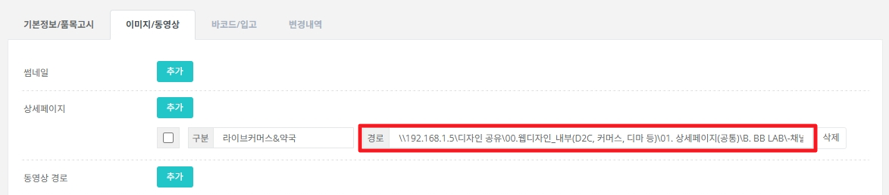
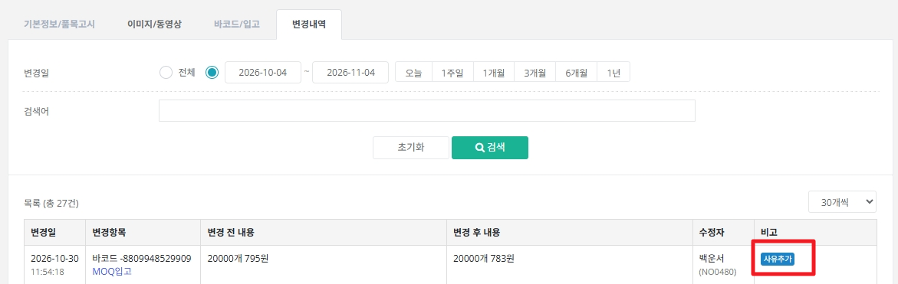

품목(상품·부자재·원료)의 기본 정보를 등록하고 관리하는 화면입니다. 품목 하나 아래에 바코드를 여러 개 둘 수 있고, 이 구조를 이해하는 것이 가장 중요합니다.
상품마스터의 모든 정보는 품목 → 바코드 → ERP번호 순서의 부모-자식 관계로 연결됩니다. 가장 위가 품목이고, 그 아래에 바코드, 그 아래에 ERP번호가 붙습니다.
| 품목번호 | 제조사·규격 등 상품의 기본 정보를 관리하는 단위입니다. |
|---|---|
| 바코드 | 품목 아래에서 포장·규격별로 구분되는 단위입니다. |
| ERP번호 | 바코드를 조합해 만드는 출고 기준입니다. 규격 · 포장별 / 개월수별 출고 수량 기준 또는 채널별 출고 기준으로 나뉩니다. |
예시 : NRM본부가 매입 관리하는 부자재는 별도 정보 관리가 필요하지 않아, 품목번호 1600001 1개 아래에 모든 부자재가 바코드로만 구분되어 관리됩니다. 실제 구조는 품목번호 1600001을 조회해 샘플로 확인하세요. 단, 품목정보 값 중 하나라도 달라서 별도 관리가 필요하면 품목번호를 따로 등록해야 합니다.
상단 메뉴 [상품마스터] → [품목관리]로 들어갑니다. 처음 접속하면 기본 조회가 되어 있지 않으니 검색 조건을 고르고 [검색]을 눌러야 합니다. 조건을 여러 개 선택하면 모두 만족하는 결과만 나옵니다.

| 전체 / 품목 / 바코드 탭 | 기본은 전체 항목 기준입니다. [품목]을 누르면 품목 기준 값만, [바코드]를 누르면 바코드 기준 값만 목록에 나옵니다. |
|---|---|
| [파일등록 샘플다운] | 업체에서 받은 파일로 품목을 한꺼번에 등록할 때 씁니다. 품목고시유형을 고르면 해당 품목고시 기준 샘플파일을 내려받을 수 있습니다. 샘플은 행·열을 삭제하거나 항목 이름을 고치지 말고 값만 입력하세요. |
| [파일등록] | 작성한 파일을 올릴 때 서비스를 선택해 등록합니다. 샘플 양식에서 행/열을 지운 경우 등록되지 않습니다. |
| [등록] | 관리자 화면에서 품목을 한 건씩 등록합니다. |
| [목록 다운로드] | 검색 결과를 엑셀로 내려받습니다. |
품목 상세 창이 열리면 처음에는 [기본정보/품목고시] 탭만 보입니다. 저장해서 품목 등록이 끝나면 [이미지/동영상] [바코드/입고] [변경내역] 탭이 나타납니다.

| 필수 표시(*) | 별(*) 항목은 입력하지 않으면 저장할 수 없습니다. |
|---|---|
| 상품군(USP) | 여러 개 선택할 수 있습니다. 목록에 없는 상품군이 필요하면 추가를 요청하세요. |
| 제조업소/생산자 | 거래처관리에 등록한 제조사·공급사 중에서만 고르며 여러 개 선택할 수 있습니다. |
| 제조사/생산자 소재지 | 위에서 고른 제조업소 기준으로 자동 입력됩니다. 바꿔야 하면 거래처관리의 정보를 수정하세요. |
| 특이사항 | 인증서관리에 등록된 유효기간 만료 전, 사용 상태의 인증서가 대상 품목 기준으로 특이사항에 함께 노출됩니다. 그 밖의 사항은 품목별로 직접 추가 기재합니다. |
| 제품관련자료 | 자료 종류별(품목제조보고서, COA, Flow Chart, MSDS 등)로 등록 항목이 구분되어 있습니다. 각 항목 기준으로 영문 · 국문 · 기타 서류를 등록할 수 있습니다. |
| 추가서류 | 제품관련자료 항목에 해당하지 않는 기타 서류를 등록하는 곳입니다. 별도 등록이 아니라 NAS로 관리하는 서류라면 [추가]를 눌러 경로를 입력합니다. |


| 썸네일 / 상품상세 / 동영상 경로 | [추가] 클릭 후 항목별 이미지 NAS 경로를 입력합니다. 수정 후 저장하면 메일 발송 안내가 나오며 발송 여부를 직접 선택합니다. |
|---|---|
| QR 이미지 / 패키지 앞 이미지 | 영업관리 선택 관리 항목입니다. 필요하면 영업관리팀에 메일 및 메신저로 등록을 요청하세요(용량 최대 2MB, gif/png/jpg). |
기본정보·이미지/동영상·바코드/입고의 정보를 바꾸면 변경 전 → 변경 후 내용이 이 탭에 남습니다. 최초 등록 때는 표시되지 않고, 등록 이후 수정할 때부터 쌓입니다.
